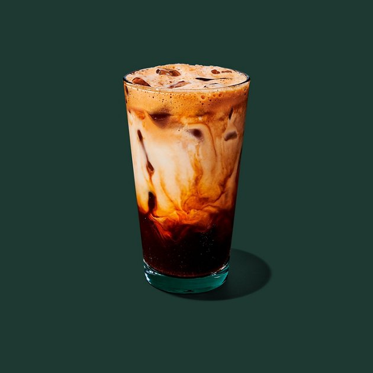
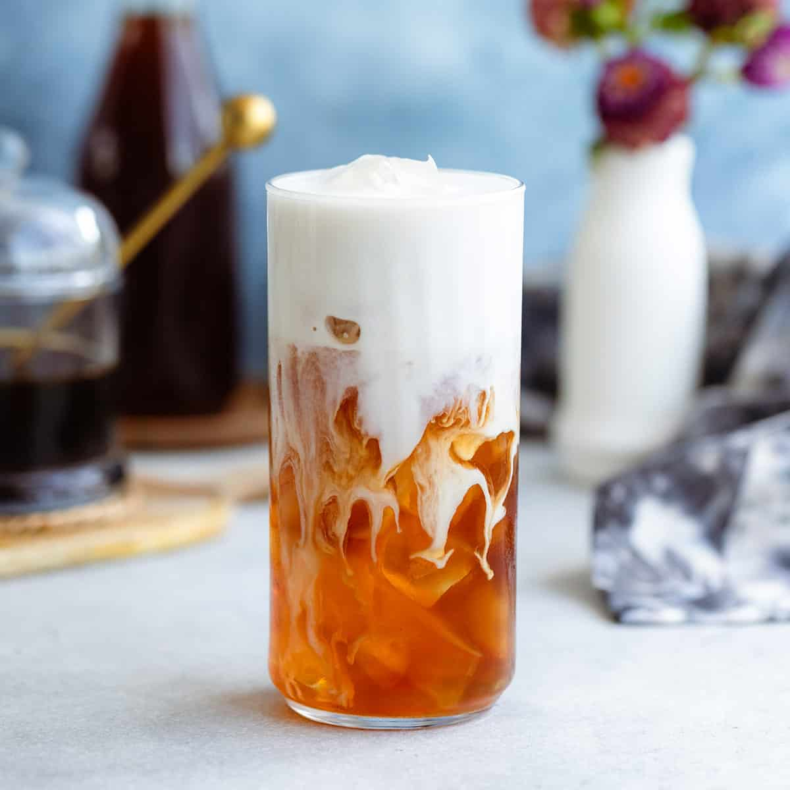

- Types of Coffee
- Types of tea
- History
- Random
Brown Sugar Shaken Espresso

Recipe
1 teaspoon of brown sugar
1/8 teaspoon cinnimmon
double shot of espresso(if you have a blonde espresso it is reccommended)
milk of choice
Ice
Instructions
Brew two shots of espresso.
Pour espresso over ice in a shaker.
Put cinnimmon in the shaker and shake until frothy(about 10 time vigorously).
pour espresso in a cup and pour milk over it(could also be poured the opposite as well).
Iced London Fog Latte

Recipe
1/2 teaspoon Vanilla Extract
1 Earl Grey Tea bag
Any milk of choice
1 Tablespoon of any sugar of choice(this can change depending on how you want)
Instructions
Boil 4oz of water and pour into a cup with your tea.
Steep some Earl Grey tea for Five minutes remove after.
Pour tea over ice in a 16oz cup (or a shaker with ice if you want it shaken).
Put vanilla extract and sugar in the tea and mix. With shaker shake everything and pour in the cup.
Pour your milk of choice over tea when everything is incorporated.